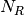
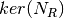

RoadRunner API Reference¶
This is the API Reference page for the module: roadrunner
The RoadRunner SBML Simulation Engine Python API, (c) 2009-2016 Endre Somogyi and Herbert Sauro
Configuration¶
Many of RoadRunner classes use a number of configuration parameters. Most of these can be set using the Config class. The values stored in the Config class only determine the default values of parameters. The Config class will look in the following locations for the config file, and will load the values from the first config file it finds. If it does not find a config file in one of the following locations, a default set of configuration parameters are used. The search locations of the config file are:
#1: the ROADRUNNER_CONFIG environment variable
#2: try the user’s home directory for roadrunner.conf, i.e.:
/Users/andy/roadrunner.conf
#3: try the user’s home directory for .roadrunner.conf, i.e.:
/Users/andy/.roadrunner.conf
#4: try the same directory as the roadrunner shared library, this will be the same directory as the python _roadrunner.pyd python extension module, i.e.:
/Users/andy/local/lib/roadrunner.conf
#5: try one directory up from the where the shared library or program is at, i.e.:
/Users/andy/local/roadrunner.conf
The conf file is just a plain text file of where each line may be key / value pair separated by a ”:”, i.e.
KEY_NAME : Value
Any line that does not match this format is ignored, and keys that are not found are also ignored. Therefore, any line that does not start with a word character is considered a comment.
All of the configuration management functions are static method of the Config class, and all of the configuration keys are static attributes of the Config class, these are documented in the Configuration Functions section.
As all of the Config class methods are static, one never instantiates the Config class.
Configuration Functions¶
- static Config.setValue(key, value)¶
Set the value of a configuration key. The value must be either a string, integer, double or boolean. If one wanted to turn off moiety conservation (this will not have an effect on already loaded models):
from roadrunner import Config Config.setValue(Config.LOADSBMLOPTIONS_CONSERVED_MOIETIES, False)
Or, other options may be set to Boolean or integer values. To enable an optimization features:
Config.setValue(Config.LOADSBMLOPTIONS_OPTIMIZE_INSTRUCTION_SIMPLIFIER, True)
- static Config.getConfigFilePath()¶
If roadrunner was able to find a configuration file on the file system, its full path is returned here. If no file was found, this returns a empty string.
- static Config.readConfigFile(path)¶
Read all of the values from a configuration file at the given path. This overrides any previously stored configuration. This allows users to have any number of configuration files and load them at any time. Say someone had to use Windows, and they had a file in their C: drive, this would be loaded via:
Config.readConfigFile("C:/my_config_file.txt")
Note, the forward slash works on both Unix and Windows, using the forward slash eliminates the need to use a double back slash, “\\”.
- static Config.writeConfigFile(path)¶
Write all of the current configuration values to a file. This could be written to one of the default locations, or to any other location, and re-loaded at a later time.
Available Configuration Parameters¶
All of the configuration parameter keys are static attributes of the Config class and are listed here. The variable type of the parameter is listed after the key name.
- Config.LOADSBMLOPTIONS_CONSERVED_MOIETIES bool¶
Perform conservation analysis. By default, this attribute is set as False.
This causes a re-ordering of the species, so results generated with this flag enabled can not be compared index wise to results generated otherwise.
Moiety conservation is only compatible with simple models which do NOT have any events or rules which define or alter any floating species, and which have simple constant stoichiometries.
Moiety conservation may cause unexpected results, be aware of what it is before enabling.
Not recommended for time series simulations.
To enable, type:
>>> roadrunner.Config.setValue(roadrunner.Config.LOADSBMLOPTIONS_CONSERVED_MOIETIES, True)
- Config.LOADSBMLOPTIONS_RECOMPILE bool¶
Should the model be recompiled? The LLVM ModelGenerator maintains a hash table of currently running models. If this flag is NOT set, then the generator will look to see if there is already a running instance of the given model and use the generated code from that one.
If only a single instance of a model is run, there is no need to cache the models, and this can safely be enabled, realizing some performance gains.
- Config.LOADSBMLOPTIONS_READ_ONLY bool¶
If this is set, then a read-only model is generated. A read-only model can be simulated, but no code is generated to set model values, i.e. parameters, amounts, values, etc...
It takes a finite amount of time to generate the model value setting functions, and if they are not needed, one may see some performance gains, especially in very large models.
- Config.LOADSBMLOPTIONS_MUTABLE_INITIAL_CONDITIONS bool¶
Generate accessors functions to allow changing of initial conditions.
- Config.LOADSBMLOPTIONS_OPTIMIZE_GVN bool¶
GVN - This pass performs global value numbering and redundant load elimination contemporaneously.
- Config.LOADSBMLOPTIONS_OPTIMIZE_CFG_SIMPLIFICATION bool¶
CFGSimplification - Merge basic blocks, eliminate unreachable blocks, simplify terminator instructions, etc...
- Config.LOADSBMLOPTIONS_OPTIMIZE_INSTRUCTION_COMBINING bool¶
InstructionCombining - Combine instructions to form fewer, simple instructions. This pass does not modify the CFG, and has a tendency to make instructions dead, so a subsequent DCE pass is useful.
- Config.LOADSBMLOPTIONS_OPTIMIZE_DEAD_INST_ELIMINATION bool¶
DeadInstElimination - This pass quickly removes trivially dead instructions without modifying the CFG of the function. It is a BasicBlockPass, so it runs efficiently when queued next to other BasicBlockPass’s.
- Config.LOADSBMLOPTIONS_OPTIMIZE_DEAD_CODE_ELIMINATION bool¶
DeadCodeElimination - This pass is more powerful than DeadInstElimination, because it is worklist driven that can potentially revisit instructions when their other instructions become dead, to eliminate chains of dead computations.
- Config.LOADSBMLOPTIONS_OPTIMIZE_INSTRUCTION_SIMPLIFIER bool¶
InstructionSimplifier - Remove redundant instructions.
- Config.LOADSBMLOPTIONS_USE_MCJIT bool¶
Currently disabled.
Use the LLVM MCJIT JIT engine.
Defaults to false.
The MCJIT is the new LLVM JIT engine, it is not as well tested as the original JIT engine. Does NOT work on LLVM 3.1
- Config.ROADRUNNER_DISABLE_PYTHON_DYNAMIC_PROPERTIES int¶
RoadRunner by default dynamically generates accessors properties for all SBML symbol names on the model object when it is retrieved in Python. This feature is very nice for interactive use, but can slow things down. If this feature is not needed, it can be disabled here.
- Config.ROADRUNNER_DISABLE_WARNINGS int¶
Disable SBML conserved moiety warnings.
Conserved Moiety Conversion may cause unexpected behavior, be aware of what it is before enabling.
RoadRunner will issue a warning in steadyState if conservedMoieties are NOT enabled because of a potential singular Jacobian. To disable this warning, set this value to 1
A notice will be issued whenever a document is loaded and conserved moieties are enabled. To disable this notice, set this value to 2.
To disable both the warning and notice, set this value to 3
Rationale for these numbers: This is actual a bit field, disabling the steady state warning value is actually 0b01 << 0 which is 1, and the loading warning is 0b01 << 1 which is 2 and 0b01 & 0b10 is 0b11 which is 3 in decimal.
- Config.LOADSBMLOPTIONS_PERMISSIVE int¶
Accept some non-valid SBML (such as Booleans in numberic expressions).
For legacy code only. Do not use.
- Config.MAX_OUTPUT_ROWS int¶
Set the maximum number of rows in the output matrix.
For models with very fine time stepping, the output of simulate can use up all available memory and crash the system. This option provides an upper bound on the maximum number of rows the output can contain. The simulation will be aborted and the output truncated if this value is exceeded.
The Main RoadRunner Class¶
- class roadrunner.RoadRunner¶
The main RoadRunner class. Its objects, i.e. rr = RoadRunner() perform the libRoaRunner functions, i.e. rr.simulate().
- RoadRunner.__init__(uriOrSBML = "", options = None)¶
Creates a new RoadRunner object. If the first argument is specified, it should be a string containing either the contents of an SBML document, or a formatted URI specifying the path or location of a SBML document.
If options is given, it should be a LoadSBMLOptions object.
If no arguments are given, a document may be loaded at any future time using the load method.
Parameters: - uriOrSBML – a URI, local path or SBML document contents.
- options – (LoadSBMLOptions) an options object specifying how the SBML document should be loaded
- RoadRunner.load(uriOrDocument)¶
Loads an SBML document, given a string for file path, URI, or contents.
This method also accepts HTTP URI for remote files, however this feature is currently limited to the Mac version, plan on enabling HTTP loading of SBML documents on Windows and Linux shortly.
Some examples of loading files on Mac or Linux:
>>> r.load("myfile.xml") # load a file from the current directory >>> r.load("/Users/Fred/myfile.xml") # absolute path >>> r.load("http://sbml.org/example_system.xml") # remote file
Or on Windows:
>>> r.load("myfile.xml") # load a file from the current directory >>> r.load("file://localhost/c:/Users/Fred/myfile.xml") # using a URI
One may also load the contents of a document:
>>> myfile = open("myfile.xml, "r") >>> contents = file.read() >>> r.load(contents)
Loading in a raw SBML string is also possible:
>>> sbmlstr = rr.getCurrentSBML() # Or any other properly formatted SBML string block >>> r.load(sbmlstr)
In future version, we will also support loading directly from a libSBML Document object.
Parameters: uriOrDocument – A string which may be a local path, URI or contents of an SBML document.
- RoadRunner.getCompiler()¶
Returns the JIT Compiler object currently being used. This object provides various information about the current processor and system.
- RoadRunner.getConfigurationXML()¶
Recurse through all of the child configurable objects that this class ones and build an assemble all of their configuration parameters into a single xml document which is returned as a string.
The value of this result depends on what child objects are presently loaded.
- RoadRunner.getExtendedVersionInfo()¶
Returns getVersionStr() as well as info about dependent libs versions.
- RoadRunner.getInfo()¶
Returns info about the current state of the object.
Return type: str
- RoadRunner.getInstanceCount()¶
Returns number of currently running RoadRunner instances.
- RoadRunner.getInstanceID()¶
Returns the instance id when there are multiple instances of RoadRunner.
- RoadRunner.getIntegrator()¶
Returns the solver instance. See roadrunner.Solver. For more information on the possible settings, see Solvers.
- RoadRunner.getIntegratorByName(name)¶
Returns the solver instance by given name. See roadrunner.Solver. For more information on the possible settings, see Solvers.
Parameters: name (str) – Name of the integrator
- RoadRunner.getAvailableIntegrators()¶
Returns a list of names of available integrators.
- RoadRunner.getExistingIntegratorNames()¶
Returns a list of names of all integrators.
- RoadRunner.getParamPromotedSBML(*args)¶
Takes an SBML document (in textual form) and changes all of the local parameters to be global parameters.
Parameters: SBML (str) – the contents of an SBML document Return type: str
- RoadRunner.getCurrentSBML()¶
Returns the SBML with the current model parameters. This is different than getSBML() which returns the original SBML. This may optionally up or down-convert the document to a different version, if the level and version arguments are non-zero. If both arguments are zero, then the document is left alone and the original version is returned.
Return type: str
- RoadRunner.getSBML()¶
Returns the original SBML model that was loaded into roadrunner.
Return type: str
- RoadRunner.setIntegrator(name)¶
Sets specific integrator. For more information on the possible settings, see Solvers.
Parameters: name (str) – name of the integrator.
- RoadRunner.setIntegratorSetting(name, key, value)¶
Sets settings for a specific integrator. See roadrunner.Solver. For more information on the possible settings, see Solvers.
Parameters: - name (str) – name of the integrator.
- key (str) – name of the setting.
- value (const) – value of the setting.
Selections¶
- RoadRunner.getIds()¶
Return a list of selection ids that this object can select on.
Return type: list
- RoadRunner.getValue(sel)¶
Returns the value for a given selection. For more information on accepted selection types see Selecting Values.
Parameters: sel (str or SelectionRecord) – a selection that is either a string or a SelectionRecord that was obtained from createSelection
- RoadRunner.getSelectedValues()¶
returns the values of the current timecourse selections for the current state of the model
Return type: numpy.ndarray
- RoadRunner.timeCourseSelections¶
Get or set the list of current selections used for the time course simulation result columns. For more information on accepted selection types, see Selecting Values.
>>> rr.timeCourseSelections = ['time', 'S1', 'S2'] >>> rr.timeCourseSelections ['time', 'S1', 'S2']
- RoadRunner.createSelection(sel)¶
Create a new selection based on a selection string
Return type: roadrunner.SelectionRecord
Model Access¶
- RoadRunner.isModelLoaded()¶
Return True if model was loaded; False otherwise
- RoadRunner.model None¶
Get the currently loaded model. The model object contains the entire state of the SBML model.
- RoadRunner.getModel()¶
Function form of the RoadRunner.model property, identical to model.
- RoadRunner.clearModel()¶
Clears the currently loaded model and all associated memory. Returns True if memory was freed, False if no model was loaded in the first place.
>>> r.isModelLoaded() True >>> r.clearModel() >>> r.isModelLoaded() False
- RoadRunner.oneStep(startTime, stepSize)¶
Carry out a one step integration of the model. The method takes two arguments, the current time and the step size to us in the integration. The method returns the new time which will be currentTime + StepSize:
newTime = rr.oneStep (10, 0.5)
- RoadRunner.reset()¶
Resets all the floating species concentrations to their initial values.
- RoadRunner.resetAll()¶
Resets all variables, species, etc. to the CURRENT initial values. It also resets all parameter back to the values they had when the model was first loaded
- RoadRunner.resetToOrigin()¶
Resets the model back to the state is was when it was FIRST loaded. The scope of reset includes all initial values and parameters, etc.
- RoadRunner.setConfigurationXML(*args)¶
given a xml document, which should have been returned from getConfigurationXML, this method recurses though all the child configurable elements and sets their configuration to the values specified in the document.
Parameters: xml (str) – the contents of an xml document.
- RoadRunner.conservedMoietyAnalysis¶
Enables / Disables conserved moiety analysis (boolean).
If this is enabled, the SBML document (either current, or one about to be loaded) is converted using the ConservedMoietyConverter. All of the linearly dependent species are replaced with assignment rules and a new set of conserved moiety parameters are introduced.
To enable, type:
>>> r.conservedMoietyAnalysis = True
Simulation¶
Fast and easy time series simulations is one of the main objectives of the RoadRunner project.
All simulation related tasks can be accomplished with the single simulate method.
- RoadRunner.simulate(*args, **kwargs)¶
Simulate and optionally plot current SBML model. This is the one stop shopping method for simulation and plotting.
simulate accepts a up to four positional arguments.
The first four (optional) arguments are treated as:
1: Start Time, if this is a number.
2: End Time, if this is a number.
3: Number of points, if this is a number.
4: List of Selections. A list of variables to include in the output, e.g. ['time','A'] for a model with species A. More below.
All four of the positional arguments are optional. If any of the positional arguments are a list of string instead of a number, then they are interpreted as a list of selections.
There are a number of ways to call simulate.
- 1: With no arguments. In this case, the current set of options from the previous
- simulate call will be used. If this is the first time simulate is called, then a default set of values is used. The default set of values are (start = 0, end = 5, points = 51).
2: With up to four positions arguments, described above.
Finally, you can pass steps keyword argument instead of points.
steps (Optional) Number of steps at which the output is sampled where the samples are evenly spaced. Steps = points-1. Steps and points may not both be specified.
Returns: a numpy array with each selected output time series being a column vector, and the 0’th column is the simulation time. Return type: numpy.ndarray
- RoadRunner.gillespie(start, end, steps)¶
Run a Gillespie stochastic simulation.
Use RoadRunner.reset() to reset the model each time.
Parameters: - start – start time
- end – end time
- steps – number of steps
Returns: a numpy array with each selected output time series being a column vector, and the 0’th column is the simulation time.
Return type: numpy.ndarray
Examples:
Simulate from time zero to 40 time units
>>> result = r.gillespie (0, 40)
Simulate on a grid with 10 points from start 0 to end time 40
>>> result = r.gillespie (0, 40, 10)
Simulate from time zero to 40 time units using the given selection list
>>> result = r.gillespie (0, 40, [‘time’, ‘S1’])
Simulate from time zero to 40 time units, on a grid with 20 points using the given selection list
>>> result = r.gillespie (0, 40, 20, [‘time’, ‘S1’])
- RoadRunner.plot(result, loc)¶
Plot results from a simulation carried out by the simulate or gillespie functions.
To plot data currently held by roadrunner that was generated in the last simulation, use:
>>> r.plot()
Parameters: - result (numpy.ndarray) – Data returned from a simulate or gillespie call
- loc (str) – string representing the location of legend i.e. “upper right”
- Roadrunner.getSimulationData()¶
Returns the array of simulated data. When simulation has not been run, the function will return an empty array.
Steady State¶
- class RoadRunner.steadyStateSolver¶
RoadRunner.steadyStateSolver class.
- RoadRunner.steadyStateSelections¶
A list of SelectionRecords which determine what values are used for a steady state calculation. This list may be set by assigning a list of valid selection symbols:
>>> r.steadyStateSelections = ['S1', '[S2]', 'P1'] >>> r.steadyStateSelections ['S1', '[S2]', 'P1']
- RoadRunner.steadyState()¶
Attempts to evaluate the steady state for the model. The method returns a value that indicates how close the solution is to the steady state. The smaller the value the better. Values less than 1E-6 usually indicate a steady state has been found. If necessary the method can be called a second time to improve the solution.
Returns: the sum of squares of the steady state solution. Return type: double
- RoadRunner.getSteadyStateValues()¶
Performs a steady state calculation (evolves the system to a steady state), then calculates and returns the set of values specified by the steady state selections.
Returns: a numpy array corresponding to the values specified by steadyStateSelections Return type: numpy.ndarray
- RoadRunner.getSteadyStateValuesNamedArray()¶
Performs a steady state calculation (evolves the system to a steady state), then calculates and returns the set of values specified by the steady state selections with all necessary labels.
Returns: a NamedArray corresponding to the values specified by steadyStateSelections Return type: NamedArray
- RoadRunner.getSteadyStateSolver()¶
Returns the steady state solver which is currently being used.
- RoadRunner.steadyStateSolverExists(name)¶
Checks whether a steady state solver exists.
Parameters: name (str) – name of a steady state solver
Metabolic control analysis¶
In the special case when an SBML model is a purely reaction kinetics model – no rate rules, no assignment rules for chemical species, and time invariant stoichiometry, specialized analysis methods related to metabolic control analysis are applicable. These methods are described in this section.
- RoadRunner.getCC(variable, parameter)¶
Returns a scaled control coefficient with respect to a global parameter.
For example:
rr.getCC ('J1', 'Vmax') rr.getCC ('S1', 'Xo') rr.getCC ('S2', 'Km')
The first returns a flux control coefficient with respect to flux J1. The second and third return concentration control coefficients with respect to species S1 and S2.
Parameters: - variable – The id of a dependent variable of the coefficient, for example a reaction or species concentration.
- parameter – The id of the independent parameter, for example a kinetic constant or boundary species
Returns: the value of the scaled control coefficient.
Return type: double
- RoadRunner.getuCC(variableId, parameterId)¶
Get unscaled control coefficient with respect to a global parameter.
Parameters: - variableId – The id of a dependent variable of the coefficient, for example a reaction or species concentration.
- parameterId – The id of the independent parameter, for example a kinetic constant or boundary species
Returns: the value of the unscaled control coefficient.
Return type: double
- RoadRunner.getEE(reactionId, parameterId, steadyState=True)¶
Retrieve a single elasticity coefficient with respect to a global parameter.
For example:
x = rr.getEE ('J1', 'Vmax')
calculates elasticity coefficient of reaction ‘J1’ with restpect to parameter ‘Vmax’.
Parameters: - variable (str) – A reaction Id
- parameter (str) – The independent parameter, for example a kinetic constant, floating or boundary species
- steadyState (Boolean) – should the steady state value be computed.
- RoadRunner.getuEE(reactionId, parameterId)¶
Get unscaled elasticity coefficient with respect to a global parameter or species.
- RoadRunner.getEigenValueIds()¶
Returns a list of selection symbols for the eigenvalues of the floating species. The eigen value selection symbol is eigen(XX), where XX is the floating species name.
- RoadRunner.getFullEigenValues()¶
Calculates the eigen values of the Full Jacobian as a real matrix, first column real part, second column imaginary part.
Note, only valid for pure reaction kinetics models (no rate rules, no floating species rules and time invariant stoichiometry).
Return type: numpy.ndarray
- RoadRunner.getReducedEigenValues()¶
Calculates the eigen values of the Reduced Jacobian as a real matrix, first column real part, second column imaginary part.
Only valid if moiety conversion is enabled.
Note, only valid for pure reaction kinetics models (no rate rules, no floating species rules and time invariant stoichiometry).
Return type: numpy.ndarray
- RoadRunner.getFullJacobian()¶
Compute the full Jacobian at the current operating point.
This is the Jacobian of ONLY the floating species.
- RoadRunner.getReducedJacobian()¶
Returns the reduced Jacobian for the independent species. This matrix will be non-singular for models that include moiety-conserved cycles.
Return type: numpy.ndarray
- RoadRunner.getScaledConcentrationControlCoefficientMatrix()¶
Returns the m by n matrix of scaled concentration control coefficients where m is the number of floating species and n the number of reactions.
Return type: numpy.ndarray
- RoadRunner.getScaledFloatingSpeciesElasticity(reactionId, speciesId)¶
Returns the scaled elasticity for a given reaction and given species.
Parameters: - reactionId (str) – the SBML id of a reaction.
- speciesId (str) – the SBML id of a species.
Return type: double
- RoadRunner.getUnscaledParameterElasticity(reactionId, parameterId)¶
Returns the unscaled elasticity for a named reaction with respect to a named parameter
Parameters: - reactionId (str) – the SBML id of a reaction.
- parameterId (str) – the SBML id of a parameter.
Return type: double
- RoadRunner.getUnscaledConcentrationControlCoefficientMatrix()¶
Returns the unscaled concentration control coefficient matrix.
- RoadRunner.getUnscaledElasticityMatrix()¶
Returns the unscaled species elasticity matrix at the current operating point.
- RoadRunner.getUnscaledFluxControlCoefficientMatrix()¶
Returns the unscaled flux control coefficient matrix.
- RoadRunner.getUnscaledSpeciesElasticity(reactionIndx, speciesIndx)¶
Get a single species elasticity value.
Parameters: - reactionIndx (int) – index of reaction
- speciesIndx (int) – index of species.
- RoadRunner.getScaledFluxControlCoefficientMatrix()¶
Returns the n by n matrix of scaled flux control coefficients where n is the number of reactions.
Return type: numpy.ndarray
- RoadRunner.getScaledElasticityMatrix()¶
Returns the scaled elasticity matrix at the current operating point.
Return type: numpy.ndarray
- RoadRunner.getDiffStepSize()¶
Returns the differential step size used in routines such as getCC().
- RoadRunner.setDiffStepSize(val)¶
Sets the differential step size used in routines such as getCC().
Parameters: val – differential step size
- RoadRunner.getSteadyStateThreshold()¶
Returns the threshold used in steady state solver in routines such as getCC().
- RoadRunner.setSteadyStateThreshold(val)¶
Sets the threshold used in steady state solver in routines such as getCC().
Parameters: val – threshold value
Stoichiometric Analysis¶
- RoadRunner.getFullStoichiometryMatrix()¶
Get the stoichiometry matrix that coresponds to the full model, even it it was converted via conservation conversion.
- RoadRunner.getReducedStoichiometryMatrix()¶
Get the reduced stochiometry matrix. If conservation conversion is enabled, this is the matrix that coresponds to the independent species.
A synonym for getNrMatrix().
- RoadRunner.getConservationMatrix()¶
Returns a conservation matrix
 which is a matrix
where
which is a matrix
where  is the number of conservation laws and
is the number of conservation laws and  the number of species.
the number of species.
- RoadRunner.getL0Matrix()¶
Returns the L0 matrix for the current model. The L0 matrix is an (m-r) by r matrix that expresses the dependent reaction rates in terms of the independent rates. m is the number of floating species and r is the rank of the stoichiometry matrix.
Return type: numpy.ndarray
- RoadRunner.getLinkMatrix()¶
Returns the full link matrix, L for the current model. The Link matrix is an m by r matrix where m is the number of floating species and r the rank of the stoichiometric matrix, N.
Return type: numpy.ndarray
- RoadRunner.getNrMatrix()¶
Returns the reduced stoichiometry matrix, , which will have only r rows where r is the rank of the full stoichiometry matrix. The matrix will be reordered such that the rows of are independent.
Return type: numpy.ndarray
- RoadRunner.getKMatrix()¶
Returns the K matrix, , (right nullspace of Nr) The K matrix has the structure,
![[I K0]'](_images/math/54bd9cc427b50123a0a394a406005e4db2ff64d8.png)
Return type: numpy.ndarray
Solver Class¶
- class roadrunner.Solver¶
Following functions are supported for given solver instance. Keep in mind some of the settings are only supported for certain types of integrators.
- Solver.getName()¶
Returns the name of this solver
- Solver.getDescription(key)¶
If key = None, returns description of this solver. Else, returns the description associated with a given key.
Parameters: key (str) – settings name
- Solver.getHint(key)¶
If key = None, returns a (user-readable) hint for this solver. Else, Returns the hint associated with a given key.
Parameters: key (str) – settings name
- Solver.getSettings()¶
Returns a list of all settings for this solver.
- Solver.resetSettings()¶
Reset all settings to their respective default values.
- Solver.getValue(key)¶
Get the value of an integrator setting.
Parameters: key (str) – settings name
- Solver.hasValue(key)¶
Return true if this setting is supported by the integrator.
Parameters: key (str) – settings name
- Solver.getNumParams()¶
Get the number of parameters.
- Solver.getParamName(n)¶
Get the display name of the parameter at index n.
Parameters: n (int) – index of parameter
- Solver.getParamHint(n)¶
Get the hint of the parameter at index n.
Parameters: n (int) – index of parameter
- Solver.getParamDesc(n)¶
Get the description of the parameter at index n
Parameters: n (int) – index of parameter
- Solver.getValueAsInt(key)¶
Wrapper for Solver.getValue() which converts output to a specific type
Parameters: key (str) – settings name
- Solver.getValueAsUInt(key)¶
Wrapper for Solver.getValue() which converts output to a specific type
Parameters: key (str) – settings name
- Solver.getValueAsLong(key)¶
Wrapper for Solver.getValue() which converts output to a specific type
Parameters: key (str) – settings name
- Solver.getValueAsULong(key)¶
Wrapper for Solver.getValue() which converts output to a specific type
Parameters: key (str) – settings name
- Solver.getValueAsFloat(key)¶
Wrapper for Solver.getValue() which converts output to a specific type
Parameters: key (str) – settings name
- Solver.getValueAsDouble(key)¶
Wrapper for Solver.getValue() which converts output to a specific type
Parameters: key (str) – settings name
- Solver.getValueAsChar(key)¶
Wrapper for Solver.getValue() which converts output to a specific type
Parameters: key (str) – settings name
- Solver.getValueAsUChar(key)¶
Wrapper for Solver.getValue() which converts output to a specific type
Parameters: key (str) – settings name
- Solver.getValueAsString(key)¶
Wrapper for Solver.getValue() which converts output to a specific type
Parameters: key (str) – settings name
- Solver.getValueAsBool(key)¶
Wrapper for Solver.getValue() which converts output to a specific type
Parameters: key (str) – settings name
- Solver.setValue(key, value)¶
Sets value of a specific setting.
Parameters: - key (str) – settings name
- value (const) – value of the setting
- Solver.getDisplayName(key)¶
Returns display name of given key.
Parameters: key (str) – settings name
- Solver.getType(key)¶
Returns the type associated with a given key.
Parameters: key (str) – settings name
- Solver.getSettingsRepr()¶
Returns the solver settings as a string.
- Solver.settingsPyDictRepr()¶
Returns Python dictionary-style string representation of settings.
- Solver.toString()¶
Return a string representation of the solver.
- Solver.toRepr()¶
Return string representation a la Python __repr__ method.
SelectionRecord¶
- class roadrunner.SelectionRecord(str)¶
RoadRunner provides a range of flexible ways of selecting values from a simulation. These values can not only be calculated directly via RoadRunner.getSelectionValue, but any of these selections can be used as columns in the simulate result matrix.
The SectionRecord.selectionType should be one of the constants listed here.
p1 and p2 may be required along with the attribute to set certain selection types that use one or more arguments.
Below is the list of attributes which are FOR ADVANCED USERS ONLY. For simplified usage, refer to Selecting Values.
- SelectionRecord.ALL¶
- SelectionRecord.ALL_DEPENDENT¶
- SelectionRecord.ALL_DEPENDENT_AMOUNT¶
- SelectionRecord.ALL_DEPENDENT_CONCENTRATION¶
- SelectionRecord.ALL_INDEPENDENT¶
- SelectionRecord.ALL_INDEPENDENT_AMOUNT¶
- SelectionRecord.ALL_INDEPENDENT_CONCENTRATION¶
- SelectionRecord.AMOUNT¶
species must have either a CONCENTRATION or AMOUNT modifer to distinguish it.
- SelectionRecord.BOUNDARY¶
species must have either a BOUNDARY or FLOATING modifiers.
- SelectionRecord.BOUNDARY_AMOUNT¶
species must have either a BOUNDARY or FLOATING modifiers.
- SelectionRecord.BOUNDARY_CONCENTRATION¶
species must have either a BOUNDARY or FLOATING modifiers.
- SelectionRecord._COMPARTMENT¶
Compartments and parameters can be either current or initial values. These values with and underscore, ‘_’ are intended to be used with either an CURRENT or INITIAL value modifier.
- SelectionRecord.COMPARTMENT¶
the current compartment value
- SelectionRecord.CONCENTRATION¶
species must have either a CONCENTRATION or AMOUNT modifer to distinguish it.
- SelectionRecord.CONSREVED_MOIETY¶
- SelectionRecord.CONTROL¶
scaled control coefficient of designated arguments.
- SelectionRecord.CURRENT¶
- SelectionRecord.DEPENDENT¶
- SelectionRecord.EIGENVALUE¶
real part of eigenvalue of designated identifier.
- SelectionRecord.EIGENVALUE_COMPLEX¶
complex part of eigenvalue of designated identifier.
- SelectionRecord.ELASTICITY¶
scaled elasticity coefficient of designated arguments.
- SelectionRecord.ELEMENT¶
- SelectionRecord.FLOATING¶
- SelectionRecord.FLOATING_AMOUNT¶
current amounts.
- SelectionRecord.FLOATING_AMOUNT_RATE¶
- SelectionRecord.FLOATING_CONCENTRATION¶
current concentrations.
- SelectionRecord.FLOATING_CONCENTRATION_RATE¶
- SelectionRecord.GLOBAL_PARAMETER¶
the current global parameter value
- SelectionRecord.INDEPENDENT¶
- SelectionRecord.INITIAL¶
- SelectionRecord.INITIAL_FLOATING_AMOUNT¶
initial amount of designated identifier.
- SelectionRecord.INITIAL_FLOATING_CONCENTRATION¶
initial concentration of designated identifier.
- SelectionRecord.RATE¶
- SelectionRecord.REACTION¶
- SelectionRecord.REACTION_RATE¶
- SelectionRecord.STOICHIOMETRY¶
stoichiometric coefficient of designated identifier and reaction.
- SelectionRecord.TIME¶
- SelectionRecord.UNKNOWN¶
- SelectionRecord.UNKNOWN_CONCENTRATION¶
- SelectionRecord.UNKNOWN_ELEMENT¶
- SelectionRecord.UNSCALED¶
- SelectionRecord.UNSCALED_CONTROL¶
unscaled control coefficient of designated arguments.
- SelectionRecord.UNSCALED_ELASTICITY¶
unscaled elasticity coefficient of designated arguments.
- SelectionRecord.index int¶
- SelectionRecord.p1 str¶
first of the arguments
- SelectionRecord.p2 str¶
second of the arguments
- SelectionRecord.selectionType int¶
SBML Compile Options¶
- class RoadRunner.LoadSBMLOptions¶
The LoadSBMLOptions object allows tuning a variety of SBML loading and compilations options.
This object can be passed in as the second, optional argument of the RoadRunner.__init__() constructor, or the RoadRunner.load() method.
- LoadSBMLOptions.conservedMoieties bool¶
Performs conservation analysis.
This causes a re-ordering of the species, so results generated with this flag enabled can not be compared index wise to results generated otherwise.
Moiety conservation is only compatable with simple models which do NOT have any events or rules which define or alter any floating species, and which have simple constant stiochiometries.
- LoadSBMLOptions.mutableInitialConditions bool¶
Generates accessor functions to allow changing of initial conditions.
- LoadSBMLOptions.noDefaultSelections bool¶
If True, do not create a default selection list when the model is loaded.
- LoadSBMLOptions.readOnly bool¶
Should the model be recompiled? The LLVM ModelGenerator maintains a hash table of currently running models. If this flag is NOT set, then the generator will look to see if there is already a running instance of the given model and use the generated code from that one.
If only a single instance of a model is run, there is no need to cache the models, and this can safely be enabled, realizing some performance gains.
- LoadSBMLOptions.recompile bool¶
If this is set, then a read-only model is generated. A read-only model can be simulated, but no code is generated to set model values, i.e. parameters, amounts, values, etc...
It takes a finite amount of time to generate the model value setting functions, and if they are not needed, one may see some performance gains, especially in very large models.
Accessing the SBML Model Variables¶
All of the SBML model variables are accessed via the RoadRunner.model object. This is an instance of the ExecutableModel class described here. One always access the model object that belongs to the top RoadRunner object, i.e. r.model, where r is an instance of the RoadRunner class.
The ExecutableModel class also implements the Python dictionary protocol, so that it can be used as a dictionary. The dictionary keys are all of the symbols specified in the original model as well as a number of selection strings described in the Selections section.
- ExecutableModel.keys()¶
Get a list of all the keys that this model has. This is a very good way of looking at all the available symbols and selection strings:
>>> r.model.keys() [ 'S1', 'S2', '[S1]', '[S2]', 'compartment', 'k1', 'cm0', 'reaction1', 'init([S1])', 'init([S2])', 'init(S1)', 'init(S2)', "S1'"]
- ExecutableModel.items()¶
Get a list of key / value pairs of all the selections / values in the model.
>>> r.model.items() [('S1', 0.5), ('S2', 9.99954570660308), ('[S1]', 0.5), ('[S2]', 9.99954570660308), ('default_compartment', 1.0), ('k1', 1.0), ('init(k1)', 1.0), ('_J0', 0.5), ('init([S1])', 10.0), ('init([S2])', 0.0), ('init(S1)', 10.0), ('init(S2)', 0.0), ("S1'", -0.5), ("S2'", 0.5)]
- ExecutableModel.__getitem__()¶
Implements the python [] indexing operator, so the model values can be accessed like:
>>> r.model["S1"] 0.0
Following notation is also accepted:
>>> r.S1 0.0
- ExecutableModel.__setitem__()¶
Implements the python [] indexing operator for setting values:
>>> r.model["S1] 0.0 >>> r.model["S1"] = 1.3 >>> r.model["S1"] 1.3
Following notation is also accepted:
>>> r.S1 = 1.0
Note, some keys are read only such as values defined by rules, or calculated values such as species amount rates or reaction rates. If one attempts to set the value of a read-only symbol, an exception is raised indicating the error, and no harm done.
Floating Species¶
- ExecutableModel.getFloatingSpeciesIds()¶
Return a list of all floating species SBML ids.
>>> r.getFloatingSpeciesIds() ['S1', 'S2', 'S3', 'S4']
- ExecutableModel.getDependentFloatingSpeciesIds()¶
Return a list of dependent floating species SBML ids.
>>> r.getDependentFloatingSpeciesIds() ['S4']
- ExecutableModel.getIndependentFloatingSpeciesIds()¶
Return a list of independent floating species SBML ids.
>>> r.getIndependentFloatingSpeciesIds() ['S1', 'S2', 'S3']
- ExecutableModel.getNumFloatingSpecies()¶
Return the number of floating species in the model.
>>> r.getNumFloatingSpecies() 2
- ExecutableModel.getFloatingSpeciesAmountRates([index])¶
Return a vector of the amount rate of change of the floating species.
The units of amount rates is amount / time.
Parameters: index (numpy.ndarray) – (optional) an index array indicating which items to return. Returns: an array of the rates of change of the floating species amounts. Return type: numpy.ndarray >>> r.model.getFloatingSpeciesAmountRates() array([-0.00045429, 0.00045429])
- ExecutableModel.getFloatingSpeciesAmounts([index])¶
Get the list of floating species amounts. If no arguments are given, this returns all floating species amounts.
Parameters: index (numpy.ndarray) – (optional) an optional array of desired floating species indices. Retuns: an array of floating species amounts. Return type: numpy.ndarray To get all the amounts:
>>> r.model.getFloatingSpeciesAmounts() array([ 0.97390578, 1.56331018, 1.15301155, 1.22717548])
To get amounts from index 0 and 1:
>>> r.model.getFloatingSpeciesAmounts([0,1]) array([ 0.97390578, 1.56331018])
- ExecutableModel.setFloatingSpeciesAmounts([index, ]values)¶
Use this to set the entire set of floating species amounts in one call. The order of species is given by the order of Ids returned by getFloatingSpeciesIds()
Parameters: - index (numpy.ndarray) – (optional) an index array indicating which items to set, or if no index array is given, the first param should be an array of all the values to set.
- values (numpy.ndarray) – the values to set.
>>> r.model.getFloatingSpeciesAmounts([0,1]) array([ 0.97390578, 1.56331018]) >>> r.model.setFloatingSpeciesAmounts([0,1], [1.0, 1.5]) >>> r.model.getFloatingSpeciesAmounts([0,1]) array([ 1. , 1.5])
- ExecutableModel.getFloatingSpeciesConcentrations([index])¶
Return a vector of floating species concentrations. The order of species is given by the order of Ids returned by getFloatingSpeciesIds()
Parameters: index (numpy.ndarray) – (optional) an index array indicating which items to return. Returns: an array of floating species concentrations. Return type: numpy.ndarray >>> r.model.getFloatingSpeciesConcentrations() array([ 4.54293397e-04, 9.99954571e+00])
- ExecutableModel.setFloatingSpeciesConcentrations([index, ]values)¶
Use this to set the entire set of floating species concentrations in one call. The order of species is given by the order of Ids returned by getFloatingSpeciesIds()
Parameters: - index (numpy.ndarray) – (optional) an index array indicating which items to set, or if no index array is given, the first param should be an array of all the values to set.
- values (numpy.ndarray) – the values to set.
>>> r.model.getFloatingSpeciesConcentrations() array([ 4.54293397e-04, 9.99954571e+00]) >>> r.model.setFloatingSpeciesConcentrations([0],[0.5]) >>> r.model.getFloatingSpeciesConcentrations() array([ 0.5 , 9.99954571])
Floating Species Initial Conditions¶
RoadRunner stores all initial conditions separately from the model state variables. This means that you can update the initial conditions at any time, and it does not affect the current state of the model. To reset the model, that is, reset it to its original state, or a new original state where what has changed the initial conditions use the reset() method.
The following methods allow access to the floating species initial condition values:
- ExecutableModel.getFloatingSpeciesInitAmountIds()¶
Return a list of the floating species amount initial amount selection symbols.
>>> r.model.getFloatingSpeciesInitAmountIds() ['init(S1)', 'init(S2)']
- ExecutableModel.getFloatingSpeciesInitConcentrationIds()¶
Return a list of the floating species amount initial concentration selection symbols.
>>> r.model.getFloatingSpeciesInitConcentrationIds() ['init([S1])', 'init([S2])']
- ExecutableModel.getFloatingSpeciesInitConcentrations([index])¶
Return a vector of floating species initial concentrations. The order of species is given by the order of Ids returned by getFloatingSpeciesInitialConcentrationIds()
Parameters: index (numpy.ndarray) – (optional) an index array indicating which items to return. Returns: an array of floating species initial concentrations. Return type: numpy.ndarray >>> r.model.getFloatingSpeciesInitConcentrations() array([ 10., 0.])
- ExecutableModel.setFloatingSpeciesInitConcentrations([index, ]values)¶
Set a vector of floating species initial concentrations. The order of species is given by the order of Ids returned by getFloatingSpeciesInitialAmountIds()
Parameters: index (numpy.ndarray) – (optional) an index array indicating which items to return. >>> r.model.setFloatingSpeciesInitConcentrations([0], [1]) >>> r.model.getFloatingSpeciesInitConcentrations() array([ 1., 0.])
- ExecutableModel.getFloatingSpeciesInitAmounts([index])¶
Return a vector of floating species initial amounts. The order of species is given by the order of Ids returned by getFloatingSpeciesInitialConcentrationIds()
Parameters: index (numpy.ndarray) – (optional) an index array indicating which items to return. Returns: an array of floating species initial amounts. Return type: numpy.ndarray >>> r.model.getFloatingSpeciesInitAmounts() array([ 10., 0.])
- ExecutableModel.setFloatingSpeciesInitAmounts([index, ]values)¶
Set a vector of floating species initial amounts. The order of species is given by the order of Ids returned by getFloatingSpeciesInitialAmountIds()
Parameters: index (numpy.ndarray) – (optional) an index array indicating which items to return. >>> r.model.setFloatingSpeciesInitAmounts([0], [0.1]) >>> r.model.getFloatingSpeciesInitAmounts() array([ 0.1, 0. ])
Boundary Species¶
- ExecutableModel.getBoundarySpeciesAmounts([index])¶
Return a vector of boundary species amounts. The order of species is given by the order of Ids returned by getBoundarySpeciesIds()
Parameters: index (numpy.ndarray) – (optional) an index array indicating which items to return. Returns: an array of the boundary species amounts. Return type: numpy.ndarray >>> r.model.getBoundarySpeciesAmounts() array([ 15., 0.])
- ExecutableModel.getBoundarySpeciesConcentrations([index])¶
Return a vector of boundary species concentrations. The order of species is given by the order of Ids returned by getBoundarySpeciesIds()
Parameters: index (numpy.ndarray) – (optional) an index array indicating which items to return. Returns: an array of the boundary species concentrations. Return type: numpy.ndarray >>> r.getBoundarySpeciesConcentrations() array([ 0.5, 0.])
- ExecutableModel.getBoundarySpeciesIds()¶
Return a vector of boundary species Ids.
Parameters: index (numpy.ndarray) – (optional) an index array indicating which items to return. Returns: a list of boundary species ids. >>> r.getBoundarySpeciesIds() ['X0', 'X1']
- ExecutableModel.getNumBoundarySpecies()¶
Return the number of boundary species in the model.
>>> r.getNumBoundarySpecies() 2
- ExecutableModel.setBoundarySpeciesConcentrations([index, ]values)¶
Use this to set the entire set of boundary species concentrations in one call. The order of species is given by the order of boundary species returned by getBoundarySpeciesIds()
Parameters: - index (numpy.ndarray) – (optional) an index array indicating which items to set, or if no index array is given, the first param should be an array of all the values to set.
- values (numpy.ndarray) – the values to set.
>>> r.model.setBoundarySpeciesConcentrations([0], [1]) >>> r.getBoundarySpeciesConcentrations() array([ 1., 0.])
Compartments¶
- ExecutableModel.getCompartmentIds([index])¶
Return a vector of compartment identifier symbols.
Parameters: index (None or numpy.ndarray) – A array of compartment indices indicating which compartment ids to return. Returns: a list of compartment ids. >>> r.getCompartmentIds() ['compartment1']
- ExecutableModel.getCompartmentVolumes([index])¶
Return a vector of compartment volumes. The order of volumes is given by the order of Ids returned by getCompartmentIds()
Parameters: index (numpy.ndarray) – (optional) an index array indicating which items to return. Returns: an array of compartment volumes. Return type: numpy.ndarray. >>> r.getCompartmentVolumes() array([ 1.])
- ExecutableModel.getNumCompartments()¶
Return the number of compartments in the model.
Return type: int >>> r.getNumCompartments() 1
- ExecutableModel.setCompartmentVolumes([index, ]values)¶
Set a vector of compartment volumes.
If the index vector is not give, then the values vector treated as a vector of all compartment volumes to set. If index is given, then values should have the same length as index.
Parameters: - index (numpy.ndarray) – (optional) an index array indicating which items to set, or if no index array is given, the first param should be an array of all the values to set.
- values (numpy.ndarray) – the values to set.
>>> r.model.setCompartmentVolumes([0], [2.5]) >>> r.getCompartmentVolumes() array([ 2.5])
Global Parameters¶
- ExecutableModel.getGlobalParameterIds()¶
Return a list of global parameter ids.
Returns: a list of global parameter ids.
- ExecutableModel.getGlobalParameterValues([index])¶
Returns a vector of global parameter values. The order of species is given by the order of Ids returned by getGlobalParameterIds()
Parameters: index (numpy.ndarray) – (optional) an index array indicating which items to return. Returns: an array of global parameter values. Return type: numpy.ndarray. >>> r.getGlobalParameterValues() array([ 10. , 10. , 10. , 2.5, 0.5])
- ExecutableModel.getNumGlobalParameters()¶
Returns the number of global parameters in the model.
>>> r.getNumGlobalParameters() 5
- ExecutableModel.setGlobalParameterValues([index, ]values)¶
Sets the entire set of global parameters. The order of parameters is given by the order of Ids returned by getGlobalParameterIds()
Parameters: - index (numpy.ndarray) – (optional) an index array indicating which items to set, or if no index array is given, the first param should be an array of all the values to set.
- values (numpy.ndarray) – the values to set.
>>> r.model.setGlobalParameterValues([0], [1.5]) >>> r.getGlobalParameterValues() array([ 1.5, 10. , 10. , 2.5, 0.5])
Reactions¶
- ExecutableModel.getNumReactions()¶
Return the number of reactions in the model.
>>> r.getNumReactions() 5
- ExecutableModel.getReactionIds()¶
Return a vector of reaction Ids.
Parameters: index (numpy.ndarray) – (optional) an index array indicating which items to return. Returns: a list of reaction ids. >>> r.getReactionIds() ['J0', 'J1', 'J2', 'J3', 'J4']
- ExecutableModel.getReactionRates([index])¶
Return a vector of reaction rates (reaction velocity) for the current state of the model. The order of reaction rates is given by the order of Ids returned by getReactionIds()
Parameters: index (numpy.ndarray) – (optional) an index array indicating which items to return. Returns: an array of reaction rates. Return type: numpy.ndarray >>> r.getReactionRates() array([ 0.14979613, 2.37711263, 2.68498886, 2.41265507, 1.89417737])
Rate Rules¶
- ExecutableModel.getNumRateRules()¶
Returns the number of rate rules.
>>> r.getNumRateRules() 1
Stoichiometry¶
- ExecutableModel.getStoichiometry(speciesIndex, reactionIndex)¶
Return the stochiometric coefficient for the given species index and reaction index.
Frequently one does not need the full stochiometrix matrix, particularly if the system is large and only a single coefficient is needed.
Parameters: - speciesIndex – a floating species index from getFloatingSpeciesIds()
- reactionIndex – a reaction index from getReactionIds()
>>> r.model.getStoichiometry(1, 3) 1.0
State Vector¶
- ExecutableModel.getStateVector([stateVector])¶
Return a vector of all the variables that represent the state of the system. The state is considered all values which change with the dynamics of the model. This would include all species which are produced or consumed by reactions, and all variables which are defined by rate rules.
Variables such as global parameters, compartments, or boundary species which do not change with the model dynamics are considered parameters and are thus not part of the state.
In performance critical applications, the optional stateVector array should be provided where the output variables will be written to.
Parameters: stateVector (numpy.ndarray) – an optional numpy array where the state vector variables will be written. If no state vector array is given, a new one will be constructed and returned.
This should be the same length as the model state vector.
Return type: numpy.ndarray >>> r.model.getStateVector() array([ 0.97390578, 1.56331018, 1.15301155, 1.22717548])
- ExecutableModel.getStateVectorId(index)¶
Get the id (symbolic name) of a state vector item.
Parameters: index (int) – the index of the desired state vector item Return type: str >>> r.model.getStateVectorId(0) 'S1'
- ExecutableModel.getStateVectorIds()¶
Return a list of all state vector ids
Return type: list >>> r.model.getStateVectorIds() ['S1', 'S4', 'S2', 'S3']
- ExecutableModel.getStateVectorRate(time[, stateVector][, stateVectorRate])¶
Calculate the rate of change of all state vector variables.
Note, the rate of change of species returned by this method is always in units of amount / time.
Parameters: - time (double) – the model time at which the calculation should be performed.
- numpy.ndarray – (optional) the model state at which the calculation should be performed. If this is not give, the current state is used.
- numpy.ndarray – (optional) an output array where the rates of change will be written to. If this is not given, a new array is allocated and returned.
Returns: an array of the rates of change of all state vector variables.
Return type: numpy.ndarray
>>> r.model.getStateVectorRate(10) array([-1.37847178, 0.5184777 , -0.30787622, 0.27233378])
Conserved Moieties¶
Refer to RoadRunner.conservedMoietyAnalysis and Config.LOADSBMLOPTIONS_CONSERVED_MOIETIES for more information.
- ExecutableModel.getNumConservedMoieties()¶
Return the number of conserved moieties in the model.
Return type: int >>> r.getNumConservedMoieties() 1
- ExecutableModel.getConservedMoietyIds([index])¶
Return a vector of conserved moiety identifier symbols.
Parameters: index (None or numpy.ndarray) – A array of compartment indices indicating which compartment ids to return. Returns: a list of compartment ids. >>> r.getConservedMoietyIds() ['_CSUM0']
- ExecutableModel.getConservedMoietyValues([index])¶
Return a vector of conserved moiety volumes. The order of values is given by the order of Ids returned by getConservedMoietyIds()
Parameters: index (numpy.ndarray) – (optional) an index array indicating which items to return. Returns: an array of conserved moiety values. Return type: numpy.ndarray. >>> r.getConservedMoietyValues() array([ 2.])
- ExecutableModel.setConservedMoietyValues([index, ]values)¶
Set a vector of conserved moiety values.
Note This method currently only updates the conserved moiety values, it does not update the initial species condition from which the values were calculated.
If the index vector is not given, then the values vector treated as a vector of all values to set. If index is given, then values should have the same length as index.
Parameters: - index (numpy.ndarray) – (optional) an index array indicating which items to set, or if no index array is given, the first param should be an array of all the values to set.
- values (numpy.ndarray) – the values to set.
>>> r.model.setConservedMoietyValues([0], [5]) >>> r.getConservedMoietyValues() array([ 5.])
Misc¶
- ExecutableModel.getInfo()¶
Get various info about the model.
>>> print(r.getInfo()) <roadrunner.RoadRunner() { 'this' : 13DEF5F8 'modelLoaded' : true 'modelName' : feedback 'libSBMLVersion' : LibSBML Version: 5.12.0 'jacobianStepSize' : 1e-005 'conservedMoietyAnalysis' : false 'simulateOptions' : < roadrunner.SimulateOptions() { 'this' : 0068A7F0, 'reset' : 0, 'structuredResult' : 0, 'copyResult' : 1, 'steps' : 50, 'start' : 0, 'duration' : 40 }>, 'integrator' : < roadrunner.Integrator() > name: cvode settings: relative_tolerance: 0.00001 absolute_tolerance: 0.0000000001 stiff: true maximum_bdf_order: 5 maximum_adams_order: 12 maximum_num_steps: 20000 maximum_time_step: 0 minimum_time_step: 0 initial_time_step: 0 multiple_steps: false variable_step_size: false }>
- ExecutableModel.getModelName()¶
Get the model name specified in the SBML.
>>> r.model.getModelName() 'feedback'
- ExecutableModel.getTime()¶
Get the model time. The model originally start at time t=0 and is advaced forward in time by the integrator. So, if one ran a simulation from time = 0 to time = 10, the model will then have it’s time = 10.
>>> r.model.getTime() 40.0
- ExecutableModel.setTime(time)¶
Set the model time variable.
Parameters: time – time the time value to set. >>> rr.model.setTime(20.) >>> rr.model.getTime() 20.0
- ExecutableModel.reset()¶
Resets all the floating species concentrations to their initial values.
- ExecutableModel.resetAll()¶
Resets all variables, species, etc. to the CURRENT initial values. It also resets all parameter back to the values they had when the model was first loaded
- ExecutableModel.resetToOrigin()¶
Resets the model back to the state is was when it was FIRST loaded. The scope of reset includes all initial values and parameters, etc.
Logging¶
RoadRunner has extensive logging system. Many internal methods will log extensive details (in full color) to either the clog (typically stderr) or a user specified file path. Internally, the RoadRunner logging system is currently implemented by the Poco (http://pocoproject) logging system.
Future versions will include a Logging Listener, so that the RoadRunner log will log messages to a user specified function.
The logging system is highly configurable, users have complete control over the color and format of the logging messages.
All methods of the Logger are static, they are available immediately upon loading the RoadRunner package.
If one wants to display logging at the lowest level (LOG_TRACE), where every logging message is displayed, one would run:
roadrunner.Logging.setLevel(roadrunner.Logging.LOG_TRACE)
Logging the following messages:
roadrunner.Logger.log(roadrunner.Logger.LOG_FATAL, "A fatal message")
roadrunner.Logger.log(roadrunner.Logger.LOG_CRITICAL, "A critical message")
roadrunner.Logger.log(roadrunner.Logger.LOG_ERROR, "An error message")
roadrunner.Logger.log(roadrunner.Logger.LOG_WARNING, "A warning message")
roadrunner.Logger.log(roadrunner.Logger.LOG_NOTICE, "A notice message")
roadrunner.Logger.log(roadrunner.Logger.LOG_INFORMATION, "An informational message")
roadrunner.Logger.log(roadrunner.Logger.LOG_DEBUG, "A debugging message.")
roadrunner.Logger.log(roadrunner.Logger.LOG_TRACE, "A tracing message. This is the lowest priority.")
will produce the following output:

If one wants different colors on the log, these can be set via:
rr.Logger.setProperty("traceColor", "red")
rr.Logger.setProperty("debugColor", "green")
The available color property names and values are listed below at the Logger.setProperty method.
Logging Levels¶
The Logger has the following logging levels:
- Logger.LOG_CURRENT¶
Use the current level – don’t change the level from what it is.
- Logger.LOG_FATAL¶
A fatal error. The application will most likely terminate. This is the highest priority.
- Logger.LOG_CRITICAL¶
A critical error. The application might not be able to continue running successfully.
- Logger.LOG_ERROR¶
An error. An operation did not complete successfully, but the application as a whole is not affected.
- Logger.LOG_WARNING¶
A warning. An operation completed with an unexpected result.
- Logger.LOG_NOTICE¶
A notice, which is an information with just a higher priority.
- Logger.LOG_INFORMATION¶
An informational message, usually denoting the successful completion of an operation.
- Logger.LOG_DEBUG¶
A debugging message.
- Logger.LOG_TRACE¶
A tracing message. This is the lowest priority.
Logging Methods¶
- static Logger.setLevel([level])¶
sets the logging level to one a value from Logger::Level
Parameters: level (int) – the level to set, defaults to LOG_CURRENT if none is specified.
- static Logger.getLevel()¶
get the current logging level.
- static Logger.disableLogging()¶
Suppresses all logging output
- static Logger.disableConsoleLogging()¶
stops logging to the console, but file logging may continue.
- static Logger.enableConsoleLogging(level)¶
turns on console logging (stderr) at the given level.
Parameters: level – A logging level, one of the above listed LOG_* levels.
- static Logger.enableFileLogging(fileName[, level])¶
turns on file logging to the given file as the given level.
Parameters: - fileName (str) – the path of a file to log to.
- level – (optional) the logging level, defaults to LOG_CURRENT.
- static Logger.disableFileLogging()¶
turns off file logging, but has no effect on console logging.
- static Logger.getCurrentLevelAsString()¶
get the textural form of the current logging level.
- static Logger.getFileName()¶
get the name of the currently used log file.
- static Logger.setFormattingPattern(format)¶
Internally, RoadRunner uses the Poco logging framework, so we can custom format logging output based on a formatting pattern string.
The format pattern is used as a template to format the message and is copied character by character except for the following special characters, which are replaced by the corresponding value.
An example pattern of “%Y-%m-%d %H:%M:%S %p: %t” set via:
roadrunner.Logger.setFormattingPattern("%Y-%m-%d %H:%M:%S %p: %t")
would produce the following output:

RoadRunner supports the following format specifiers. These were copied from the Poco documentation:
- %s - message source
- %t - message text
- %l - message priority level (1 .. 7)
- %p - message priority (Fatal, Critical, Error, Warning, Notice, Information, Debug, Trace)
- %q - abbreviated message priority (F, C, E, W, N, I, D, T)
- %P - message process identifier
- %T - message thread name
- %I - message thread identifier (numeric)
- %N - node or host name
- %U - message source file path (empty string if not set)
- %u - message source line number (0 if not set)
- %w - message date/time abbreviated weekday (Mon, Tue, ...)
- %W - message date/time full weekday (Monday, Tuesday, ...)
- %b - message date/time abbreviated month (Jan, Feb, ...)
- %B - message date/time full month (January, February, ...)
- %d - message date/time zero-padded day of month (01 .. 31)
- %e - message date/time day of month (1 .. 31)
- %f - message date/time space-padded day of month ( 1 .. 31)
- %m - message date/time zero-padded month (01 .. 12)
- %n - message date/time month (1 .. 12)
- %o - message date/time space-padded month ( 1 .. 12)
- %y - message date/time year without century (70)
- %Y - message date/time year with century (1970)
- %H - message date/time hour (00 .. 23)
- %h - message date/time hour (00 .. 12)
- %a - message date/time am/pm
- %A - message date/time AM/PM
- %M - message date/time minute (00 .. 59)
- %S - message date/time second (00 .. 59)
- %i - message date/time millisecond (000 .. 999)
- %c - message date/time centisecond (0 .. 9)
- %F - message date/time fractional seconds/microseconds (000000 - 999999)
- %z - time zone differential in ISO 8601 format (Z or +NN.NN)
- %Z - time zone differential in RFC format (GMT or +NNNN)
- %E - epoch time (UTC, seconds since midnight, January 1, 1970)
- %[name] - the value of the message parameter with the given name
- %% - percent sign
Parameters: format (str) – the logging format string. Must be formatted using the above specifiers.
- static Logger.getFormattingPattern()¶
get the currently set formatting pattern.
- static Logger.levelToString(level)¶
gets the textual form of a logging level Enum for a given value.
Parameters: level (int) – One of the above listed logging levels.
- static Logger.stringToLevel(s)¶
parses a string and returns a Logger::Level
Parameters: s (str) – the string to parse.
- static Logger.getColoredOutput()¶
check if we have colored logging enabled.
- static Logger.setColoredOutput(b)¶
enable / disable colored output
Parameters: b (boolean) – turn colored logging on or off
- static Logger.setProperty(name, value)¶
Set the color of the output logging messages.
In the future, we may add additional properties here.
The following properties are supported:
- enableColors: Enable or disable colors.
- traceColor: Specify color for trace messages.
- debugColor: Specify color for debug messages.
- informationColor: Specify color for information messages.
- noticeColor: Specify color for notice messages.
- warningColor: Specify color for warning messages.
- errorColor: Specify color for error messages.
- criticalColor: Specify color for critical messages.
- fatalColor: Specify color for fatal messages.
The following color values are supported:
- default
- black
- red
- green
- brown
- blue
- magenta
- cyan
- gray
- darkgray
- lightRed
- lightGreen
- yellow
- lightBlue
- lightMagenta
- lightCyan
- white
Parameters: - name (str) – the name of the value to set.
- value (str) – the value to set.
- static Logger.log(level, msg)¶
logs a message to the log.
Parameters: - level (int) – the level to log at.
- msg (str) – the message to log.
JIT Compilation¶
- class RoadRunner.Compiler¶
The Compiler object provides information about the JIT compiler currently in use.
- Compiler.getCompiler()¶
gets the name of the JIT compiler, i.e. “LLVM” means we are using the LLVM JIT compiler.
Return type: str
- Compiler.getVersion()¶
get the version of the JIT compiler.
Return type: str
- Compiler.getDefaultTargetTriple()¶
Return the default target triple the compiler has been configured to produce code for. A ‘triple’ is just a string that contains three items, it is called ‘triple’ as that is a LLVM historical convention.
The target triple is a string in the format of: CPU_TYPE-VENDOR-OPERATING_SYSTEM
or
CPU_TYPE-VENDOR-KERNEL-OPERATING_SYSTEM
Return type: str
- Compiler.getProcessTriple()¶
Return an appropriate target triple for generating code to be loaded into the current process, e.g. when using the JIT.
Return type: str
- Compiler.getHostCPUName()¶
getHostCPUName - Get the LLVM name for the host CPU. The particular format of the name is target dependent, and suitable for passing as -mcpu to the target which matches the host.
return - The host CPU name, or empty if the CPU could not be determined.
Return type: str
- Compiler.setCompiler(compiler)¶
A legacy method that currently does not do anything.
- Compiler.getCompilerLocation()¶
A legacy method that currently does not do anything.
- Compiler.setCompilerLocation(loc)¶
A legacy method that currently does not do anything.
- Compiler.getSupportCodeFolder()¶
A legacy method that currently does not do anything.
- Compiler.setSupportCodeFolder(path)¶
A legacy method that currently does not do anything.
Miscellaneous Functions¶
- roadrunner.getCopyrightStr()¶
Returns the copyright string
- roadrunner.getVersionStr()¶
Returns the version string
- static roadrunner.RoadRunner_getExtendedVersionInfo()¶
getVersionStr() with infomation about dependent libs versions.
- static roadrunner.RoadRunner_getParamPromotedSBML(*args)¶
Takes an SBML document (in textual form) and changes all of the local parameters to be global parameters.
Parameters: SBML (str) – the contents of an SBML document Return type: str
- roadrunner.validateSBML(*args)¶
Given a string, check whether the string is a valid SBML string. Raises exception if the string is not a valid SBML string.
Parameters: SBML (str) – the contents of an SBML document
- roadrunner.listTestModels()¶
Lists all the test models.
- roadrunner.loadTestModel(name)¶
Load a test model given a name.
Parameters: name (str) – name of the test model